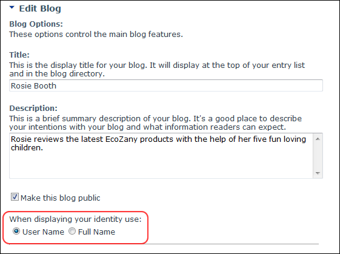
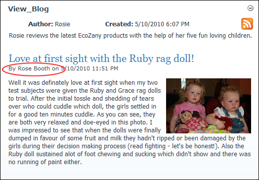

Setting a Bloggers Identity
How to set a blog to display either the blogger's user name or full name as the blog author using the Blog module. This can be performed by bloggers on their own blog and by Administrators on any blogs.
Tip: The name displayed at the Author field at the top of your blog is always your Display Name as set on your profile.
- Click the Blog Settings link on the New_Blog module - OR - Click the blog name on the Blog_List module and then select Edit Blog Settings from the View_Blog module actions menu. This opens the Edit Blog page.
- Go to the Blog Options section.
- At When Displaying Your Identity Use, select from these options:
- Select User Name to display your user name. This is the default option. E.g. Rosie
- Select Full Name to display your first name and last name. E.g. Rose Booth

-
Click the Update button.

Blog Identity as displayed on the View_Blog module